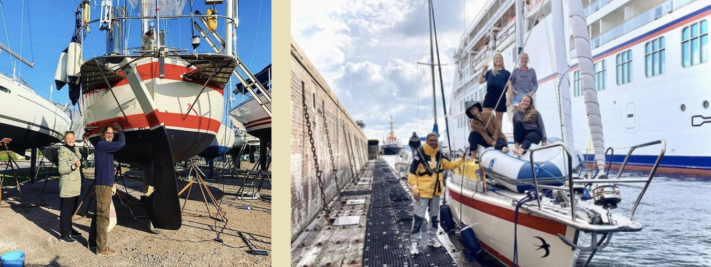

Intervjuer med kreativa människor som delar med sig av egna tankar och erfarenheter

Sofie och Christopher
Att drömma om Atlanten och Karibien är det säkert många som gör. Men att göra drömmen till verklighet och lämna Vikens trygga hamn gav långseglarna Sofie och Christopher ett äventyr på riktigt. Det var i september 2020 som paret lämnade Sverige för att segla över Atlanten och till Karibien med båten Svala. Bara ett halvår tidigare hade de tagit beslutet om att följa sin dröm och därefter följde en intensiv period av förberedelser parallellt med jobb. Sofie och Christopher sitter på en restaurang i Västindien (närmare bestämt Guadeloupe) när vi hörs via videolänk.
Instagram: @svalasail
Hur skulle ni beskriva er själva som personer?
Vi tycker om när tillvaron inte är alltför förutsägbar. Att långsegla förutsätter att man har en viss kärlek för äventyr och förmåga att anpassa sig efter de omständigheter som råder. Vi gillar att vara i naturen och uppskattar utmaningen som väder och vind innebär för oss som seglare. På ett mer personligt plan kompletterar vi varandra väldigt bra. Christopher gillar att fördjupa sig i nya ämnen och tar gärna lite mer tid på sig. Sofie är ofta snabb i sina beslut men har inte alltid samma tålamod. Med det sagt har vi båda varit väldigt drivande i den här drömmen som från början var Sofies.
När kom seglingen in i era liv och hur mycket erfarenhet hade ni innan resan?
Jag har seglat med familjen sedan barnsben medan Christopher introducerades för nöjet när vi träffades. Som sextonåring hyrde jag båtar med kompisar och seglade i Göteborgs skärgård. Jag har gått på Sjöfartshögskolan och tagit flera nationella och internationella certifikat. I flera år arbetade jag som charterkapten i medelhavet, Thailand och Brittiska Jungfruöarna och drev under fyra år mitt egna charterföretag i Medelhavet. Christopher hade nästintill noll erfarenhet av segling när vi träffades men fick upp ett intresse och har varit oerhört motiverad att lära sig. Vi seglade en del i Sverige innan beslutet om en längre resa togs. Det var inte helt självklart att Christopher skulle fastna för seglingen men det gjorde han och började fördjupa sig i ämnet genom internet och turerna vi gjorde.
När bestämde ni er för att långsegla?
När jag träffade Sofie så hakade jag på den dröm hon länge haft. Sofie har i flera år haft en tanke om att segla över Atlanten men inte någon tydlig plan om när och med vem. Det var i november 2019 som drömmen blev till en plan och vi sa att "detta gör vi". Tre månader senare, i februari 2020 köpte vi båten. Det normala är att förbereda sig i minst ett år inför en seglats av den här typen. Att kasta loss i september (bara ett halvår senare) kan därför ses som lite kaosartat.
Hur förberedde ni er inför resan?
Det var mycket att förbereda inför avsegling. Vi sålde två lägenheter och köpte en båt. Vi gjorde flera genomgångar av båten där vi la stort fokus på säkerhet. Vi hade en lista med saker som måste göras och en lista med saker som borde göras. Den senare blir man aldrig klar med och det är bara att acceptera. Samtidigt är det viktigt att allt på båten är i gott skick. Vi gjorde därför flera genomgångar av båten och tog hjälp av proffs. Parallellt med förberedelserna av båten hade vi vanliga jobb vilket ibland kändes påfrestande.

När började resan och hur kändes det att ge sig av?
Första september 2020 kastade vi loss. Det dröjde innan vi upplevde känslan av det riktiga äventyret. I början gick allt i ett. Vi hade tre tjejer med oss varav en aldrig seglat förut. Christopher jobbade fram till två dagar innan avsegling och förberedelserna pågick in i det sista. Det var när vi kom till Spanien, kanske Frankrike som allt kom ikapp oss. Tyvärr präglades första tiden av mycket regn och låga temperaturer men det hindrade inte besättningens glada humör. Hade vi åkt en månad tidigare kanske det hade varit mer sol och bad men vi hade det väldigt bra ändå.
Instagram: @svalasail
Vad är/var planen för resan?
Grundplanen var att segla till Karibien och tillbaka med en tidsram på ett år. Inom seglingsvärlden får man bara bära röda byxor om man har korsat Atlanten, så målet var att korsa atlanten. Christopher har tjänstledigt i ett år men huruvida vi håller oss till den tidsramen eller ej är inte bestämt än. Vi har diskuterat möjligheten att lämna båten i Karibien för att kunna komma tillbaka senare. Vi får se hur det blir.
Har ni funnit en vardag i båten? Finns det något ni saknar med Sverige?
Det finns ingen vardag i det liv vi lever just nu. Ibland seglar vi på havet, ibland mekar vi med båten, ibland utforskar vi land och ibland badar vi. Mycket beror på väderförhållanden, vilka möjligheter som finns där vi befinner oss och vad som behöver göras. Ibland kan man sakna familj och vänner men annars trivs vi väldigt bra här där vi är.
Hur påverkas er segling av pandemin?
I början påverkade den oss knappt, men har tyvärr gjort det mer och mer. Olika regler gäller i olika länder och hamnar. Det är mycket tid som läggs på att förstå vad som gäller och administrativt arbete för att följa dessa riktlinjer. En tråkig konsekvens är att en del av de som skulle följt med som besättning har blivit tvungna att stanna hemma på grund av sjukdom eller restriktioner.
VNi har haft med gastar på båten olika sträckor. Hur har det gått?
I det stora hela har det fungerat väldigt bra. Båten är inte så stor vilket både gör att man kommer varandra nära men det kan även vara påfrestande emellanåt. Vi tog medvetet med oss de med minst seglingserfarenhet från Sverige. Anledningen var att dessa tjejer skulle ha lättare att ta sig hem om seglingen inte föll dem i smaken vilket kan vara svårt att veta innan. Vi brukar ibland äta middag själva på restaurang för att få tid för varandra när vi varit många på båten. Det har varit ett bra sätt att komma iväg lite. Några av våra bästa upplevelser ombord har dock varit tillsammans med och tack vare de människor som följt med. Vi har fått vänner för livet. Dessutom har det varit en avlastning i allt arbete på båten.
Vilket säkerhetstänk har ni? Är ni oroliga för stormar, pirater, containrar mm? Hur har ni förberett er säkerhetsmässigt?
Vi ser riskerna och känner oss såklart oroliga ibland men det får inte ta över heller. Vårt ankare var inte tillräckligt bra vilket skapade viss oro. Nu har vi ett nytt ankare men vi har helt klart respekt för de risker som finns. Samtidigt har en viss oro försvunnit i takt med att vi har vaggats in i seglingen. Det är ju inte lönt att gå runt och oroa sig hela tiden och det går heller inte att vara hundra procent förberedd på alla eventuella farliga utfall.
Vilken är er favoritupplevelse hittills och varför?
Vi har många och det är svårt att välja ut ett som skulle vara bättre än de andra. Det har varit fantastiska nätter med stjärnklar himmel, skrattanfall med människor som seglat med och soliga dagar här i Karibien. En fantastisk upplevelse var att segla i de Holländska kanalerna. Arkitekturen i Amsterdam var helt helt otrolig och så var det spännande att segla genom staden. Det rekommenderar vi verkligen om du ska ut på seglingsäventyr.
Instagram: @svalasail
Har ni stött på några svårigheter? Hur löste ni dem?
När vi kom till Portugal var det en utmaning att segla in i hamnen. Det gick hög sjö och vi hade räknat fel på tiden. Kolsvart mörker och fem meter höga vågor i kombination med tidvatten och ett begränsat manövreringsutrymme är inget vi vill uppleva igen. Vi gjorde det vi kunde och höll tummarna för att båten inte skulle slå i betongpiren. Annars var Atlanten en utmaning på olika sätt. Till att börja med gick autopiloten sönder andra dagen vilket nästan fick oss att vända om och åka tillbaka. Fortsättningsvis blev vi sjösjuka i olika omgångar och upplevde emellanåt otrolig tristess. Vi läste lite böcker, övade knopar och satt och pratade. Vi hade mycket kul också och kom över havet till slut. Väl framme blev vi coronatestade och därefter tog vi in på hotell i några dygn. Efter tre veckor i en trång båt var det en oerhörd lyx bara att duscha i sötvatten.
Har ni något bra tips till någon som är sugen på att långsegla? Är det något ni hade velat veta innan ni gav er av?
1. Det kommer aldrig bli rätt tid att ge sig av. Vill du göra något så kommer det finnas annat du kanske missar. Vill du långsegla måste du bestämma dig.
2. Se till att båten är i det bästa skick den kan vara och köp allt du kan tänkas behöva i Sverige innan avresa.
3. Om det är möjligt så försök åka när det fortfarande är lite sommar. Vi lämnade Sverige i början av hösten och var förföljda av dåligt väder.
4. Ha bra koll på väder, vind och tidvatten. Det gäller både kunskapsmässigt och den aktuella prognosen under seglingen.
5. Ta med besättning! Vi har haft mycket kul med alla de människor som seglat med oss. Det underlättar belastningen och minskar hemlängtan. Dessutom lär man känna nya trevliga människor.
6. Det är dyrt i Karibien så se till att handla mycket av det du behöver i Europa. Mycket är dyrare på öarna av naturliga skäl.
7. Det är bra att ha en plan men planera inte för mycket. Vi har ständigt behövt ändra våra planer. Försök vara spontan, anpassningsbar och uppskatta ovissheten.
Finns det något ni är särskilt stolta över?
Vi är stolta över att vi kom iväg. Att det inte bara var prat utan att vi nu ligger ankrade i Karibien och har tagit oss över Atlanten. Hela grejen att vi vågade säga upp oss respektive ta tjänstledigt, sälja lägenheterna och att vi har gjort allt på vårt sätt.